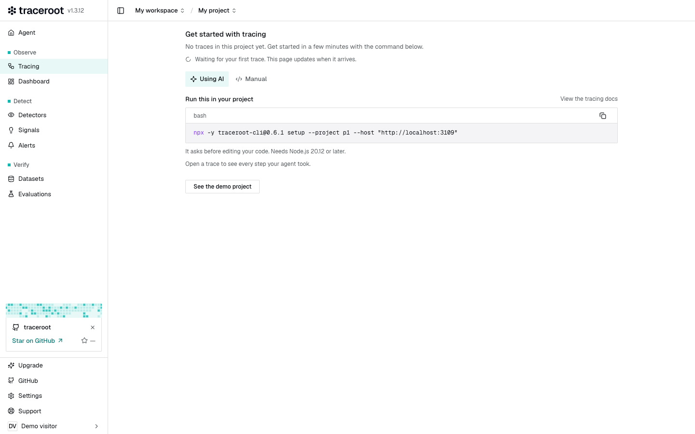
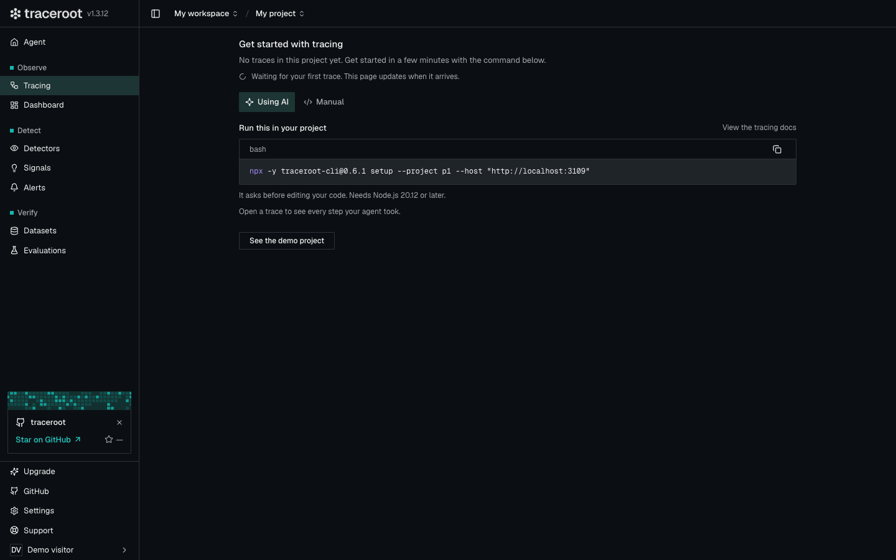
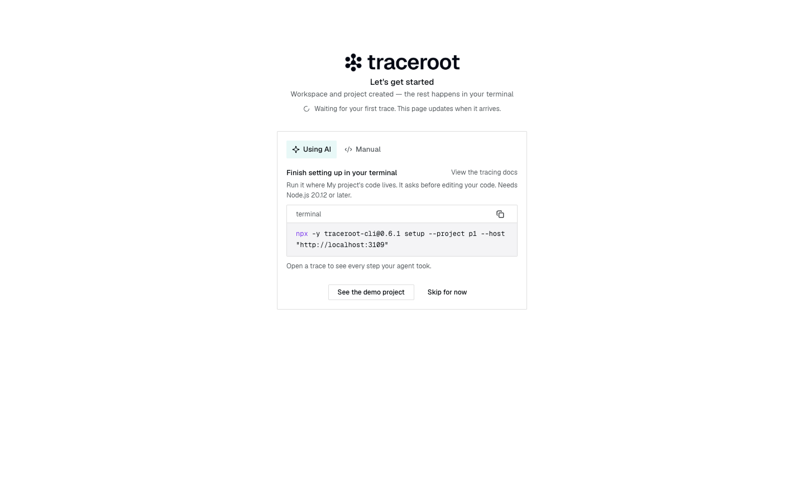
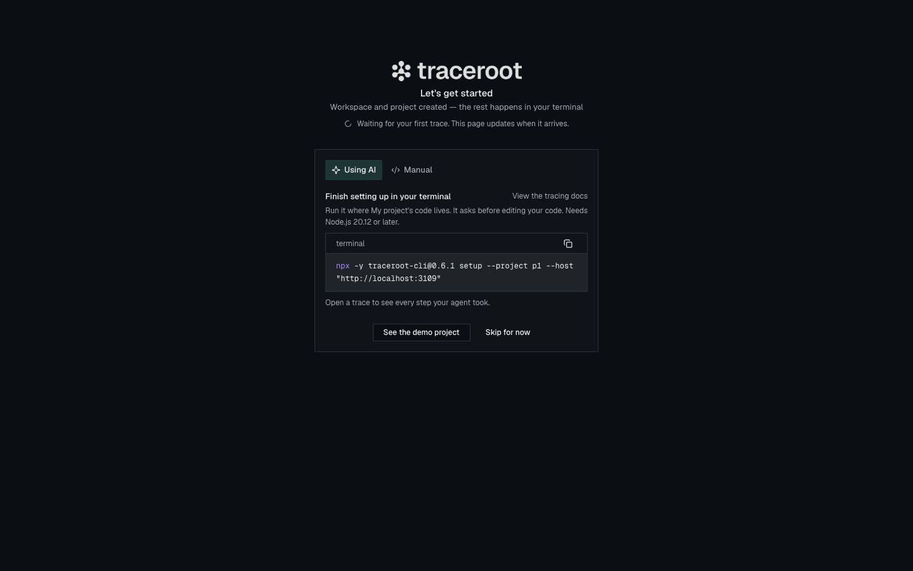
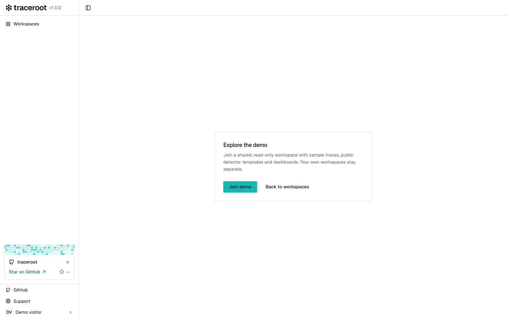
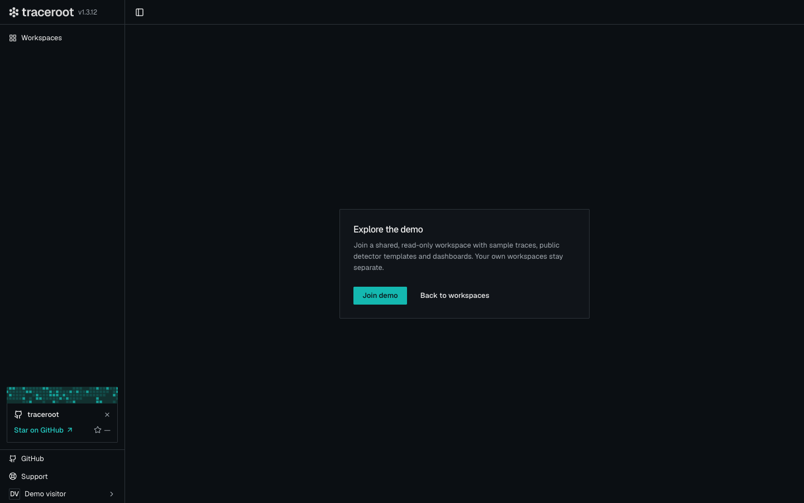
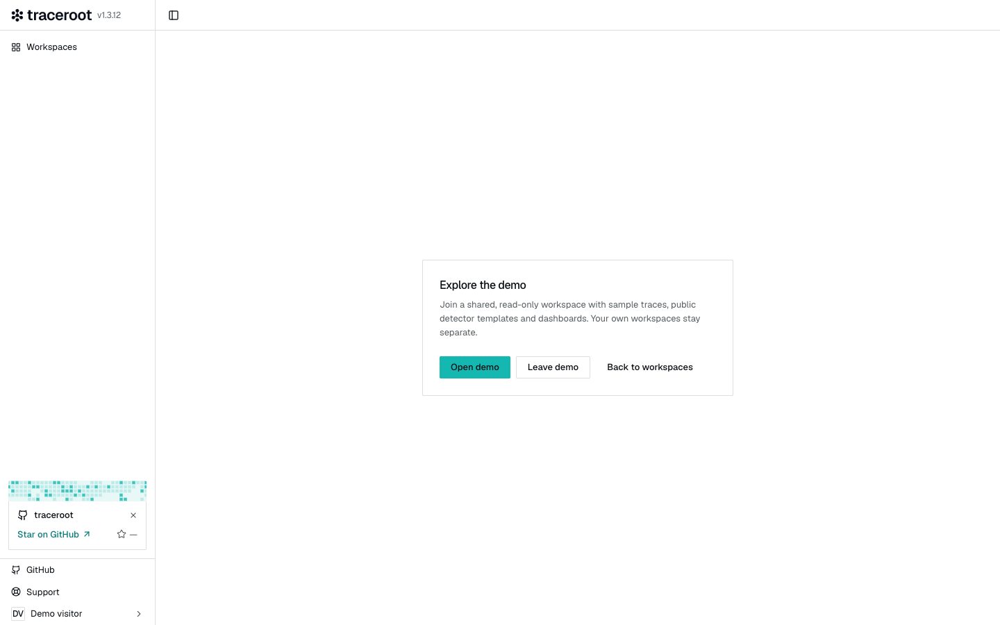
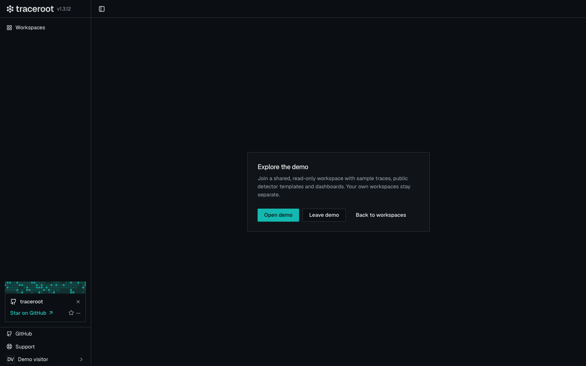
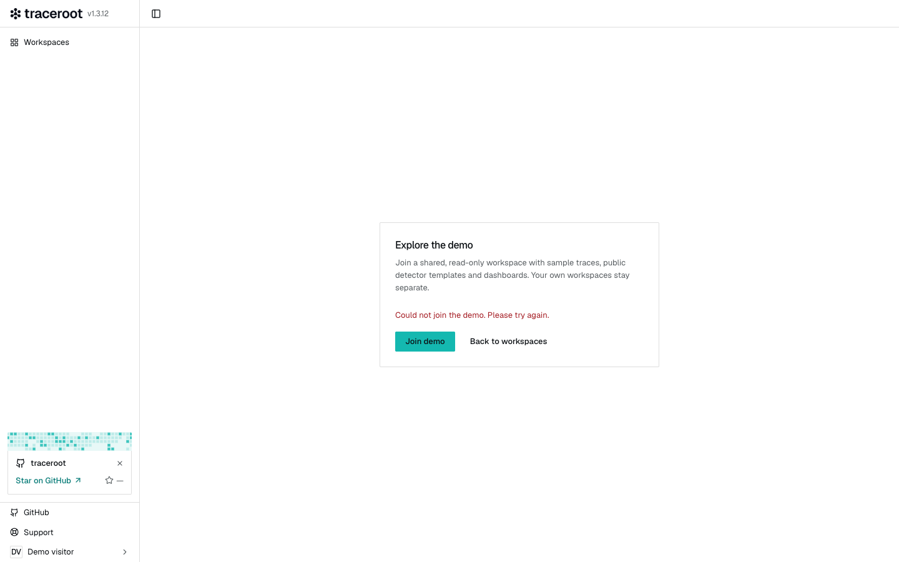
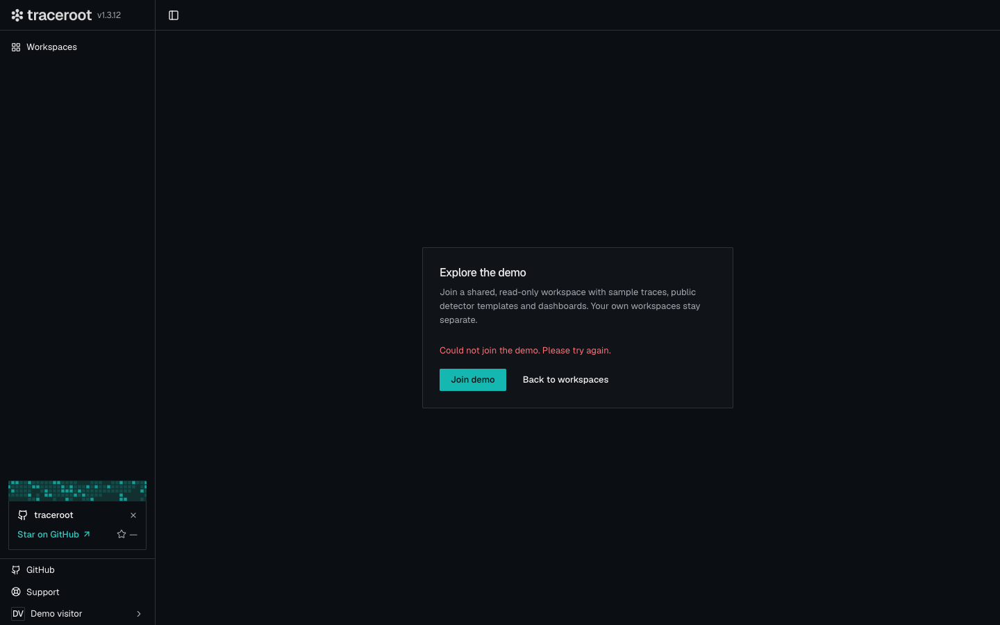

Fixture-backed visual evidence. Real database validation is reported separately in the PR. No production verification is claimed.
Before b8a7cd195; after 286ca0e3b. All narrow captures have 0px document overflow.










See README.md for before/after pairs, pixel diffs, narrow widths, chapters and contrast ratios.